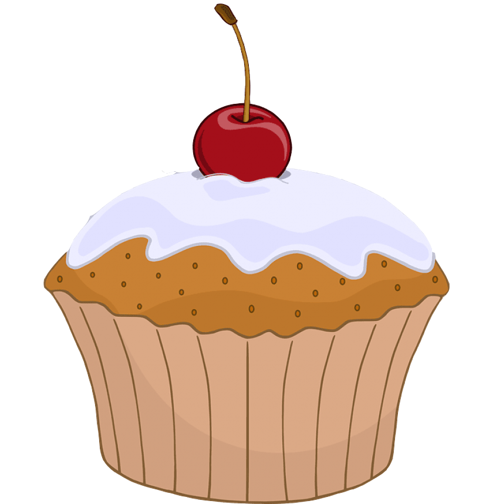

Quickbread muffins are baked, individual-sized, cupcake-shaped foods with a "moist, coarse-grained" texture. Muffins are available in both savoury varieties, such as cornmeal and cheese muffins (i.e. flatbread muffins), or sweet varieties such as blueberry, chocolate chip, lemon or banana flavours.
Sweetened muffins range from lightly sweetened muffins to products that are "richer than many cakes in fat and sugar." They are similar to cupcakes in size and cooking methods, the main difference being that cupcakes tend to be sweet desserts using cake batter and which are often topped with sugar icing